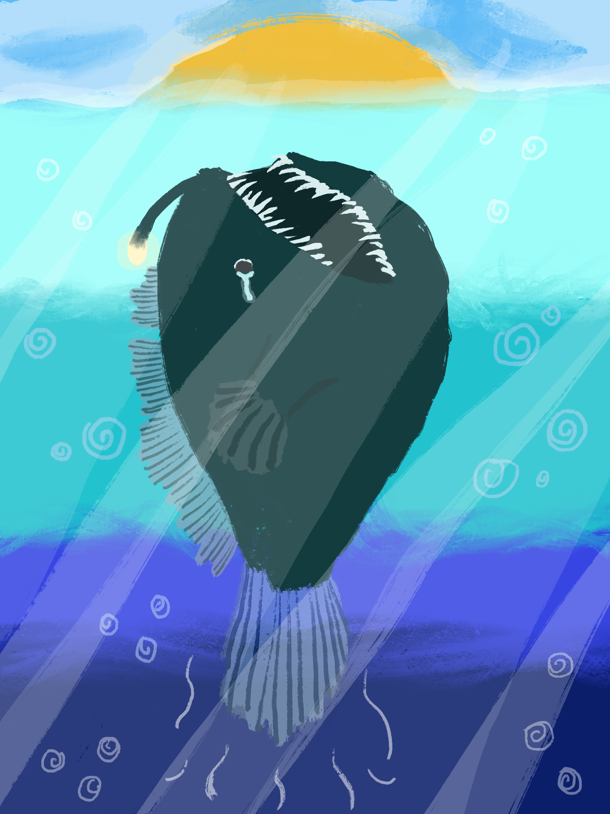

→News Alert!!←
This just in new sightings
on the popular app TikTok have shown something never seen before! An extremely rare sighting
of a Black Seadevil Anglerfish has been reported. The tiny anglerfish was only about 6-inches in
length and didn't survive long after its perilous journey to the surface.
Naturally, they live at the deepest, darkest depths so she would have traveled several hundred
meters to get to the surface. It is an awe, a mystery, and possibly an omen. What could have
caused this creature from the deep to swim all the way to the shore?